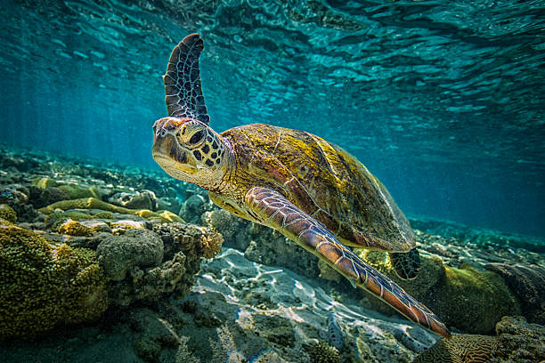

Kosgoda Turtle Hatchery
There are many turtle hatcheries in Sri Lanka.One of them is Kosgoda turtle hatchery. It was established in 1981. It is locate in Kosgoda village.Many tourists and local citizens visit that place.It is one of the main tourist attractions in Sri Lanka. Kosgoda turtle hatchery is responsible for increasing turtle habitat of Sri Lanka and protect Turtle habitat in Sri lanka.Kosgoda turtle hatchery use many methods and techniques to increase and protect turtle habitat in Sri Lanka.Turtle hatchery protect turtle eggs and protect turtle babies to protect and increase the turtle habitat of Sri Lanka.Kosgoda turtle hatchery is one of the main and important turtle hatcheries in Sri Lanka.


